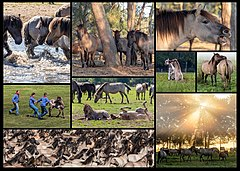
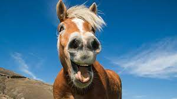
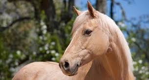
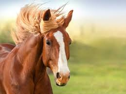

Конете най-искренното и добро животно!
Конят е един от двата съвременни подвида на Дивия кон. Представлява опитомен еднокопитен бозайник представител на семейство Коне. Предците на съвременните коне еволюират преди около 45 – 55 милиона години от дребен многопръст тревопасен бозайник „хиракотерий“, който е бил с ръст само 14 cm и тегло 5 kg, до едър еднокопитен представител днес. Одомашняването от хората започва преди около 6000 години, а до 3000 г. пр. Хр. конят се разпространява в различни краища на Земята. Представителите на днешния опитомен подвид са наследници на дивия кон, който свободно е обитавал първичните си местообитания. Самият термин див кон е неточен, но се използва, за да отдели конете от видове, които никога не са били одомашнявани. Такъв например е Конят на Пржевалски, който е вторият подвид на дивия кон.
Дълголетната връзка на коня с човека е наложила използването на редица думи и термини, които да опишат отделните възрастови и полови категории, размери на тялото, неговия цвят, анатомични особености, маркиране, породи, движения и поведение.
   Анатомията на коня е следствие от редица еволюционни приспособления, възникнали с цел развиване на скорост за избягване от хищници. Имат силно развито чувство за баланс и отбрана. В тази връзка конят е развил и една от необичайните си черти – спи еднакво добре както изправен, така и легнал, благодарение на уникалната си способност за „заключва“ сухожилията на краката си. Сънят на коня има само 2 фази – SWS (кратък дълбок сън) и REM (бързо движение за очите).
Бременността при кобилите продължава 11 месеца, а малкото конче се изправя на крака и започва да следва майка си минути след раждането. Обучението на младите коне започва на около две- до четиригодишна възраст. Тялото на коня достига пълното си развитие на около петгодишна възраст, а продължителността на живота му е около 25 – 30 години.
В световен мащаб конете играят голяма роля в човешките култури в продължение на хилядолетия. Те се използват за развлекателни и спортни дейности, както и за работни цели. Конете са използвани многократно по време на война, благодарение на което оборудването, техниките на езда и водене, както и методите за контрол, са се усъвършенствали значително. Много продукти се получават от коне, в това число месо, мляко, кожа, коса, кости, и различни фармацевтични продукти, извлечени от урината на бременни кобили. Хората гледат опитомени коне, осигурявайки им храна, вода и подслон, както и грижи от специалисти, като ветеринарни лекари и ковачи.